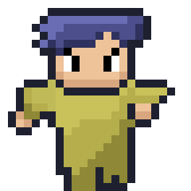

WORLD
MONUMENT
RULES
SOULS
IGNITE
EN
繁中
日本語
BGM
TOWN
CHURCH
INHABITANTS OF THE WORLD
S O U L S
PRIEST · LAYER I
"Order is happiness"
Ordis
承天命的祭司

WARRIOR · LAYER I
"If fate is right, why do I still doubt?"
Dubia
The Warrior Who Questions Fate
— YOUR SOUL IN THIS WORLD —
將你的意志刻入世界 →
— OTHER SOULS —
ORDIS
DUBIA
???
???
???
???
???